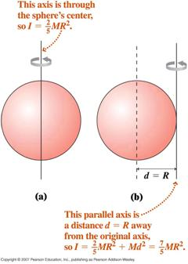

Rotational Kinetic Energy and Moment of Inertia

A man said to the Universe: "Sir,
I exist!". "However,"
replied the Universe,
"the fact has not created in me a
sense of obligation".
Stephen Crane
- Having obtained one form of
- Rotational Kinetic Energy
For rotation about a single axis the kinetic energy of a system of particles can be written
But for all the particles we can write ; where ri is the perpendicular distance of each particle from the axis and all particles have the same angular velocity. Therefore,
where we define the
- Moment of Inertia (or Rotational Inertia) of the object by
Notice that I plays the same role as m (mass) in translational motion.
However, unlike mass, I does not have a simple fixed value for rigid bodies. Its value depends upon the axis of rotation (through the ri).
If the system of particles is such that it may be considered continuous the summation definition of I becomes an integral,
where dm is an element of mass.
- Parallel
Axis Theorem:
“The
moment
of inertia about any axis is equal to the moment of inertia
about
a parallel axis through the centre of mass plus the mass of
the object
times
the square of the distance between the axes.”
The expressions for
moment of
inertia about axes through the centre of mass of many common
objects
are well
known (see table in text).
Application of the parallel axis theorem
allows a determination of the moment of inertia about many other
axes.
{kind=link}
“A wizard is never late, nor is he
early. He arrives precisely
when he
means to.”
Gandalf – The Lord of the Rings

Dr. C. L. Davis
Physics Department
University of Louisville
email: c.l.davis@louisville.edu